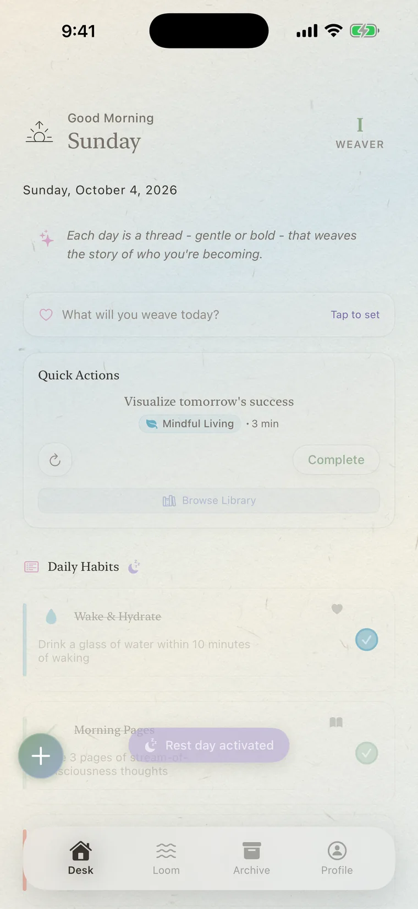
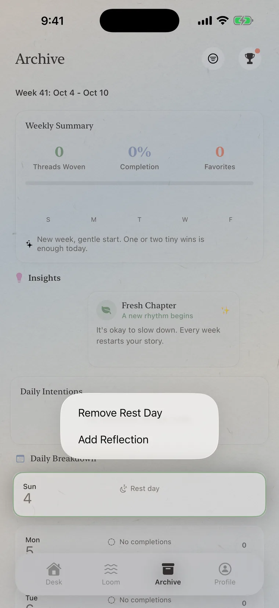
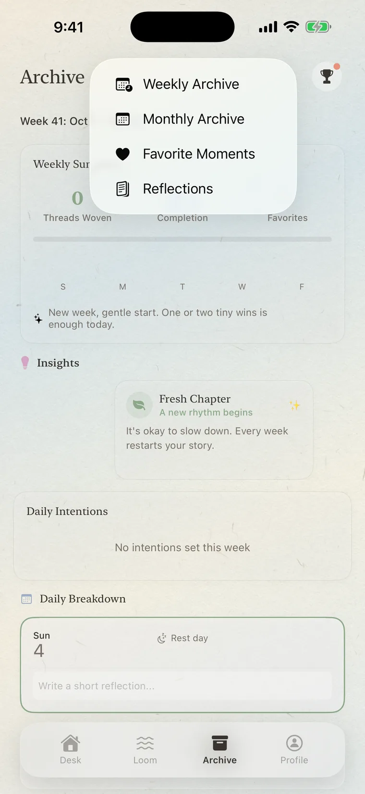
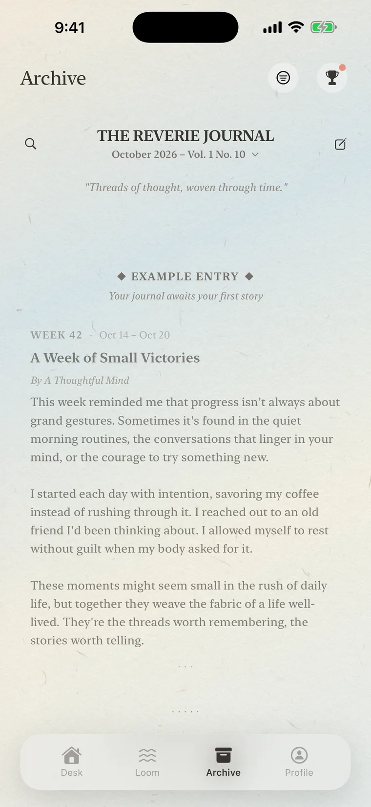
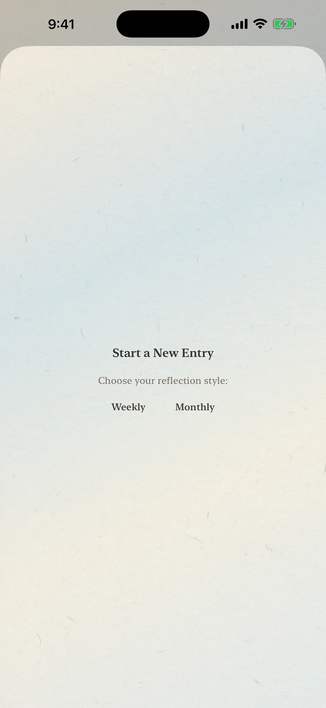
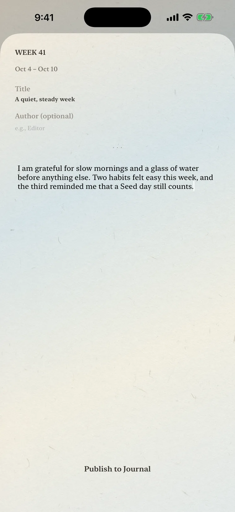
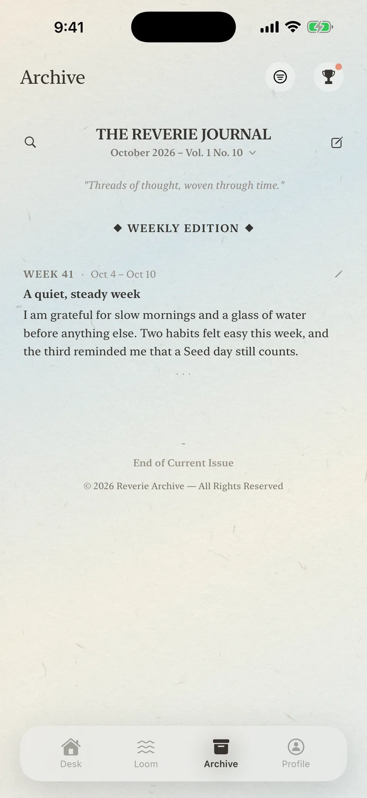
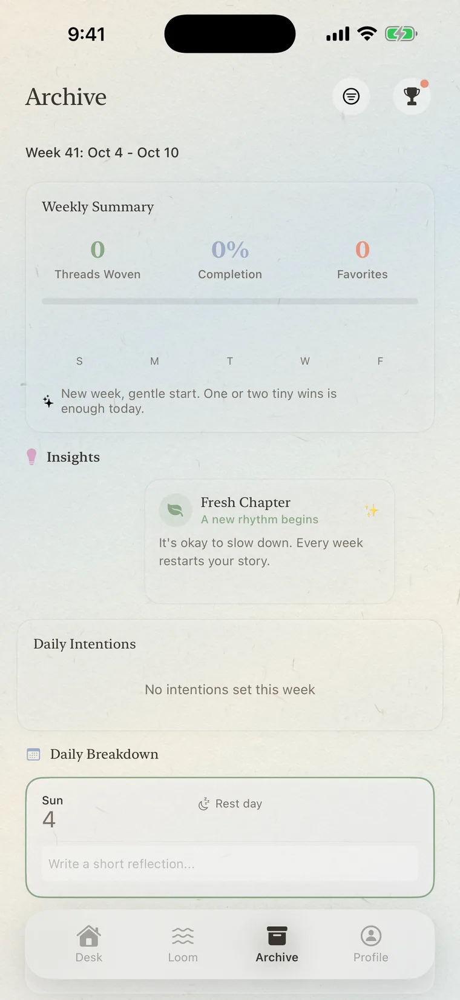

I · Getting started
The basics.
Do I need an account?
No. Open the app and begin. There’s nothing to sign up for or log in to.
Which devices does it run on?
iPhone and iPad with iOS 17.6 or later.
What’s the difference between Simple Mode and Full Mode?
Simple Mode is the Desk on its own: three slots for the day (morning, afternoon, evening), a focus button, and an Up Next reminder. Full Mode is the complete Weaver, with the Loom, the Archive, the Habit Library, and guided programs.
To switch, tap the + button on the Desk and choose Full Mode or Simple Mode. Nothing is lost either way. More in the Gentle Guide.
Which languages does it support?
English and Simplified Chinese. Choose one in Settings, under Language, and relaunch the app to apply it fully.
How do I add a habit?
Tap the + button on the Desk, then Create New to write your own, or Browse Library to look through ready-made habits. Browsing the Habit Library is free. Adding from it is part of Weaver+.
II · Finding things
The two that are easy to miss.
Both of these live in Full Mode. Simple Mode shows only the Desk, so tap the + button and choose Full Mode first.
How do I set a rest day?
There are two ways, and both take a press and hold.
- On the Desk (today): press and hold the Daily Habits heading for about a second. A small moon appears beside it, your habit list dims, and a “Rest day activated” note confirms. Press and hold again to take the rest day back.
- In the Archive (any day this week): open Archive, scroll to Daily Breakdown, press and hold that day’s card, and choose Mark as Rest Day (or Remove Rest Day). The Archive lets you mark up to two rest days in a week.
A rest day pauses your streak instead of breaking it, and it isn’t counted against that week’s completion.


How do I write a weekly reflection?
- Open Archive.
- Tap the round button with three lines at the top right, next to the trophy, and choose Reflections. This opens The Reverie Journal.
- Tap the pencil icon at the top right of the journal.
- Choose Weekly.
- Add a title if you like (the author line is optional). The page offers a gentle question to start from, such as “What are you grateful for this week?”. Then write.
- Tap Publish to Journal. Your entry appears under Weekly Edition, labelled with the week and its dates.
Good to know: writing new entries is part of Weaver+, while reading, editing, and deleting what you have already written is always free. To change an entry, tap the small pencil beside it, then Save. There is one weekly entry per week; if you try for a second, the app asks whether to edit the existing one or create another. Each month holds up to four weekly entries and one monthly entry. If you leave before publishing, your draft is kept, and Continue Previous Draft appears next time.





How do I add a short note to a single day?
In Archive, under Daily Breakdown, press and hold the day’s card and choose Add Reflection. A “Write a short reflection…” line opens on the card.

Where are the Monthly Archive and Favorite Moments?
In the same place: the round button with three lines at the top right of the Archive. It switches between Weekly Archive, Monthly Archive, Favorite Moments, and Reflections. Tapping the word “Archive” at the top takes you back to the weekly page.
III · Your data
Where things live.
Where is my data stored?
On your device. We have no servers that receive your habits, reflections, tasks, or photos. If you turn on iCloud sync, your data travels through your own private iCloud account instead. Read the privacy policy.
How do I turn on iCloud sync?
Open Settings (the gear on the Profile screen; in Simple Mode, switch to Full Mode first) and switch on iCloud Sync. It’s off by default and needs you to be signed in to iCloud on your device. If you aren’t, the switch stays off and the line under it says why. A message explains what will happen, then you close and reopen the app to start syncing. Until you do, the line under the switch reads “Starts when you reopen the app.”
Can I export my data?
Yes, in two ways. Export Habits & Reflections saves your habits, completion history, and reflections as a JSON file to keep or share. It doesn’t include tasks, focus sessions, program progress, achievements, or PDFs, and it can’t be re-imported, so it’s a personal record rather than a full backup. You can also export a month’s reflections as a PDF.
How do I move to a new phone?
Turn on iCloud Sync in Settings on your current device and give it a moment online so your latest changes upload. On the new phone, sign in to the same iCloud account, finish the welcome screens, and turn iCloud Sync on before you add anything new, then close and reopen the app. Your habits, reflections, and progress arrive; if you created things on the new phone first, they’re merged in alongside, so you may need to delete a duplicate. If something looks missing, close the app fully and open it again. A few things stay on each device: reminders (open a habit and save it to set its reminder on the new phone), a few Settings choices such as language and Simplify Background, and the day count on your journey. Please don’t rely on the export file for this, since it can’t be re-imported.
How do I delete my data?
Edit or delete habits, reflections, and tasks any time inside the app. Settings also has Storage Management, including a way to clear data older than a year. Deleting the app removes its local data, and if you used iCloud sync you can manage that data in your iCloud settings.
IV · Weaver+
Plans, purchases, and access.
What’s free, and what’s Weaver+?
Reverie Weaver is free to start: up to three active habits of your own, the forgiving core (tiers, streaks, rest days, scheduling), the whole Grimoire, and a lighter Loom. Weaver+ adds the Habit Library, guided programs, unlimited habits, focus sessions and priority tasks, writing new reflections, and more. See the full list.
Why are only three habits free?
The free version is meant to be a real taste, not a demo: three habits of your own, the forgiving core, and the entire Grimoire. More habits, the Habit Library, and the guided programs are part of Weaver+, which is how the app stays ad-free and independent.
Is there a free trial?
The annual plan includes a 7-day free trial for eligible Apple Accounts. The monthly plan doesn’t. The purchase screen shows the offer Apple has made available to your account before you confirm.
What plans are available?
In the United States, Weaver+ is planned at $3.99 a month or $24.99 a year. The annual plan includes the eligible 7-day trial. Your App Store shows the actual product, price, currency, and eligibility for your account before purchase.
A $59.99 lifetime purchase may appear only during Reverie Weaver’s year-turning season, from December 20 through Lunar New Year’s Day. It is a one-time purchase, not a subscription. Availability and local price are always shown by the App Store.
If I buy lifetime, does Apple cancel my subscription?
No. A one-time purchase does not automatically cancel an existing Apple subscription. Check your subscription in iPhone Settings under your name, then Subscriptions, so you do not keep renewing a plan you no longer need.
How do I cancel, or restore a purchase?
Manage or cancel a Weaver+ subscription in your iPhone’s Settings app: tap your name, then Subscriptions. Reverie Weaver also provides a Manage Subscription action when Apple reports an active subscription. To recover an earlier subscription or lifetime purchase on this device, choose Restore Purchases. Restore asks Apple to verify your entitlement again; it never charges you.
How do I redeem a Weaver+ offer code?
Open Reverie Weaver’s Settings and tap Redeem Code. Apple presents the secure redemption sheet; Reverie Weaver never sees or stores the code. Access appears after the App Store verifies the subscription offer. Offer codes are time-limited Weaver+ access, not a permanent or lifetime purchase.
What happens if a renewal payment fails?
If Apple places the subscription in Billing Grace Period, Weaver+ remains available for up to 3 days while Apple tries the payment again. If Apple cannot recover it by the end of that grace period, premium access pauses. Updating your payment method or restoring after recovery asks Apple to refresh the entitlement.
What happens if Weaver+ ends?
Nothing you made is deleted. Habits, focus sessions, reflections, programs, and progress remain stored. Existing writing stays readable, editable, and deletable. A premium guided program pauses at its saved day rather than continuing unpaid; it resumes there if Weaver+ returns. Gentle Rhythm Week and Level 1 of Project 50 remain available under the free rules.
If a premium focus scene is active when access ends, the current session may finish without a jarring visual change. The next session uses the free Quiet Loom scene.
A purchase says it is pending. What should I do?
Apple may hold a purchase for approval or payment verification. Reverie Weaver will not unlock paid access until Apple confirms the transaction, and you should not need to buy it again. Return to the app after approval and use Restore Purchases if the status has not refreshed.
How do I request a refund?
Apple processes purchases and refunds. Visit reportaproblem.apple.com and sign in with the Apple Account used for the purchase. Reverie Archive cannot issue an App Store refund or see your payment details.
V · Troubleshooting
When something’s off.
My reminders aren’t arriving.
First check your iPhone’s Settings under Notifications → Reverie Weaver and make sure notifications are allowed. Reminder times are set on each habit.
Habit reminders respect Focus and Scheduled Summary by default. If you want eligible habit reminders to request more immediate delivery, turn on Time Sensitive Habit Reminders in Reverie Weaver’s Settings and also allow Time Sensitive Notifications for the app in iOS. iOS and your Focus configuration make the final delivery decision. This is not a Critical Alert: Silent Mode and system notification settings still apply.
Wake-Up Nudge is separate. It remains an ordinary notification and does not use the Time Sensitive habit-reminder option.
I can’t find the widgets.
Touch and hold an empty spot on your Home Screen, tap the + button, and search for Reverie Weaver. Today’s Threads, Completion Ring, and Quick Action are free. Journey Progress and Loom Focus are part of Weaver+.
Something looks wrong, or I found a bug.
We’d like to hear about it. Please write with what you were doing, your iPhone or iPad model and iOS version, and the app version (in Settings), and a screenshot if you can.
I have an idea.
Lovely. Write to us below, or use Send Feedback in the app’s Settings.
VI · Contact
Write to us.
For a bug, include what you were trying to do, the steps that reproduce it, your device model, iOS version, and the app version shown in Settings. A screenshot helps, but please remove private journal text or other personal details first.
For a purchase question, include the product name and the status Apple shows, but never send payment-card details, your Apple Account password, or a redemption code.